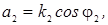
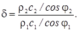
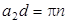
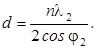

5.3 Прохождение звуковой волны через плоский слой материала
Пусть звуковая волна, распространяющаяся в среде с волновым сопротивлением ρ1c1, проходит через плоский слой материала с волновым сопротивлением ρ2c2 (см. рисунок). Толщину слоя обозначим d. Такая ситуация реализуется, например, при прохождении звуковой волны через перегородку или перекрытие, изготовленные из однородного материала.
Используем
те же граничные условия, что и в случае падения плоской звуковой волны на
границу двух сред. Применив эти условия при x = 0
и при x = d,
можно получить выражения для коэффициента отражения и коэффициента
прохождения:
где  
Проанализируем
полученные формулы.
При
δ = 1 (согласование волновых сопротивлений) получается, что r = 0,
t = 1,
то есть звуковая волна беспрепятственно проходит через
слой.
Кроме того, полное прохождение будет наблюдаться при , то есть при  или 
При
этом на толщине слоя укладывается целое число полуволн (λ2 = с2/f
- длина звуковой волны в материале
слоя).
Для тонкого по сравнению с длиной волны слоя (a2d << 1) выражение можно упростить:
Таким
образом, при заданном угле падения коэффициент отражения от тонкого слоя прямо
пропорционален частоте звука.
При нормальном падении звуковой волны на слой коэффициент прохождения звука равен:
Для тонкого (по сравнению с длиной волны) слоя плотного материала (k2d << 1, ρ2c2 >> ρ1c1)
где
M2 = ρ2d
– масса
Величина,
равная отношению интенсивности падающей волны к интенсивности прошедшей через
слой волны, называется коэффициентом
звукоизоляции:
При
нормальном падении коэффициент звукоизоляции равен:
При выполнении условий k2d << 1 и ρ2c2 >> ρ1c1
Из
выражения видно, что коэффициент звукоизоляции возрастает при увеличении
плотности материала и толщины слоя, а также при возрастании частоты звука.
На практике часто используется величина Rиз(дБ), которая называется звукоизоляцией или индексом звукоизоляции слоя (перегородки, перекрытия и т.д.):
Эта
величина показывает, на сколько децибел уменьшается уровень звука при
прохождении через слой материала. Примерный вид частотной зависимости Rиз(дБ)
приведен на рисунке.
< Предыдущая Оглавление Следующая >